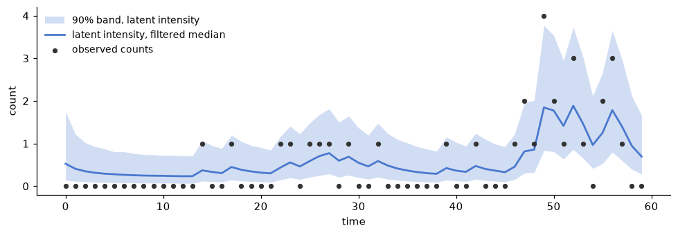

A short introduction to sequential inference for state-space models
I want to start with a quick sketch of how these methods developed. Which algorithm to use depends largely on the assumptions you are willing to make about the form of your state-space model. It also depends on which pieces of the model you are willing to assume known. Let us start with a linear-Gaussian state-space model:
where \(F_t\) is the observation matrix, \(G_t\) is the state-evolution matrix, and \(V_t\) and \(W_t\) are the observation- and state-noise covariance matrices. The noise sequences are independent over time, of each other, and of the initial state \(\theta_0 \sim \mathcal{N}(m_0, C_0)\). Everything in this display is, for now, assumed known. The \(t\) subscripts allow the matrices to change through time. The closed forms below require only that the matrices are known at each step, not that they are constant. We return to what happens when they are not known at the end of this tour. The classic first case there is an unknown observation variance.
Let us focus on the filtering distribution \(p(\theta_t \mid y_{1:t})\) as the posterior distribution of interest. In this linear-Gaussian case with everything known, the filtering distribution is also Gaussian (West and Harrison, 1997; Durbin and Koopman, 2012). We write it as \(\theta_t \mid y_{1:t} \sim \mathcal{N}(m_t, C_t)\), where \(m_t = \mathrm{E}(\theta_t \mid y_{1:t})\). The classic Kalman filtering equations (Kalman, 1960) update the pair \((m_t, C_t)\) in closed form, one observation at a time. Suppose the filtering distribution at time \(t-1\) is \(\theta_{t-1} \mid y_{1:t-1} \sim \mathcal{N}(m_{t-1}, C_{t-1})\). Evolving the state one step ahead gives the prior at time \(t\), \(\theta_t \mid y_{1:t-1} \sim \mathcal{N}(a_t, R_t)\), with
The implied one-step forecast of the next observation is \(y_t \mid y_{1:t-1} \sim \mathcal{N}(f_t, Q_t)\), with
Once \(y_t\) is received, Bayes' theorem gives the new filtering distribution \(\theta_t \mid y_{1:t} \sim \mathcal{N}(m_t, C_t)\), with
where \(e_t = y_t - f_t\) is the forecast error and \(A_t = R_t F_t^\top Q_t^{-1}\) is the gain matrix. The form of the recursions and the notation follow West and Harrison (1997), ch. 4, and Petris, Petrone, and Campagnoli (2009). These equations also make clear what needs to be known, defined, or observed to carry them out. The model matrices \(F_t\), \(G_t\), \(V_t\), and \(W_t\) must be known at every step. The prior mean \(m_0\) and covariance \(C_0\) must be defined to start the recursion. The only data needed at time \(t\) is the newly observed \(y_t\). The pair \((m_{t-1}, C_{t-1})\) already carries everything the earlier observations had to say. The new posterior becomes the prior for the next observation and the cycle repeats. That is, the exact posterior of the state \(\theta_t\) is updated observation by observation.
Now we can relax the assumptions one at a time. Start with linearity. In the linear-Gaussian model the products \(G_t \theta_{t-1}\) and \(F_t \theta_t\) define linear functions. The function \(\theta \mapsto G_t \theta\) maps the state space to itself and moves the state forward in time. The function \(\theta \mapsto F_t \theta\) maps the state space to the observation space. Relaxing linearity replaces both with known nonlinear functions \(g_t\) and \(h_t\):
Every other assumption is kept. The noises are still additive and Gaussian. The functions, the covariances, and the prior are still known. Even so, the filtering distribution, in general, stops being Gaussian, and the closed-form recursions are gone. Gaussian approximations of the same evolve-forecast-update cycle survive. The extended Kalman filter linearizes \(g_t\) and \(h_t\) at the current mean and reuses the exact linear update. The unscented Kalman filter instead propagates a small deterministic set of sigma points through \(g_t\) and \(h_t\) and matches moments (Julier and Uhlmann, 2004). Both return an approximate pair \((m_t, C_t)\), not the exact posterior (Särkkä and Svensson, 2023).
Now relax the distributional assumptions as well. The observations may be discrete counts, bounded quantities, or heavy-tailed measurements. The noise may enter multiplicatively rather than additively. What remains is the structural assumption of the general state-space model: the latent state process is a Markov chain and the observations are conditionally independent given the states. That is, \(\theta_t\) depends only on the previous state \(\theta_{t-1}\), and \(y_t\) depends only on the current state \(\theta_t\). The model is now specified by an observation density and a state density,
with an initial density \(\theta_0 \sim p(\theta_0)\). All three densities are assumed known. Sequential Bayesian inference rests on the same two steps as the Kalman filter, now written for a general model. The first computes the one-step-ahead forecast density. The second applies Bayes' theorem to turn the forecast into the next filtering distribution (Doucet, de Freitas, and Gordon, 2001):
Beyond the linear-Gaussian and finite-state cases, no closed form computes those integrals. A particle filter maintains a Monte Carlo approximation instead. The filtering distribution is represented by \(N\) particles and their normalized importance weights, \(\lbrace (\theta_t^{(i)}, w_t^{(i)}) : i = 1, \ldots, N \rbrace\), so that
where \(\delta_\theta\) denotes a unit point mass at \(\theta\). From here on \(w\) denotes a weight. The evolution noise of the earlier displays plays no further role, since the state density absorbs it. The simplest version is the bootstrap filter of Gordon, Salmond, and Smith (1993). Each particle is drawn one step forward from the state density and the Bayes update is paid in weight through the observation density:
The unnormalized weights \(\tilde{w}_t^{(i)}\) are then normalized to sum to one. When too few particles carry too much of the weight, the particles are resampled and the weights reset. These formulas again make clear what is needed. We must be able to sample from the initial density and the state density. We must be able to evaluate the observation density at the received \(y_t\). Beyond that the form of the model is unrestricted. Refinements keep the same skeleton. Auxiliary resampling looks one observation ahead to choose which particles to propagate (Pitt and Shephard, 1999). Observation-informed proposals sharpen the approximation further (Doucet, Godsill, and Andrieu, 2000).
One relaxation remains. It is the one promised at the start. So far every relaxation changed the form of the model. The pieces themselves stayed known: first the matrices and covariances, then the nonlinear functions, then the densities. Now drop that assumption. Suppose the densities keep a known functional form but depend on a vector of unknown parameters \(\phi\). The unknowns could be the evolution-matrix entries or the noise variances themselves. To do Bayesian inference we must define one more piece, a prior for \(\phi\), and the model becomes:
A static \(\phi\) couples every time step to every other. In special cases the exact posterior can still be updated by conjugate Bayesian inference. For example, a linear-Gaussian model whose one unknown variance scales every covariance in the model — the observation noise, the evolution noise, and the initial-state covariance — updates exactly, carrying only two summary statistics for the variance alongside the Kalman pair \((m_t, C_t)\) (West and Harrison, 1997, ch. 4). However, for the general state-space model no fixed set of summary statistics carries \(p(\theta_t, \phi \mid y_{1:t})\) forward (Kantas et al., 2015). The augmented state \((\theta_t, \phi)\) does not rescue the particle filter either. The recursion itself still holds, but a static \(\phi\) is never refreshed by the state density. The particle cloud's \(\phi\)-support can only ever shrink. Sequential Monte Carlo, a name the literature often uses interchangeably with particle methods, answers with the same weighted-particle machinery aimed at any sequence of distributions (Chopin and Papaspiliopoulos, 2020). We can rejuvenate \(\phi\) online beside the states (Liu and West, 2001). We can run a filter for every parameter particle (SMC²: Chopin, Jacob, and Papaspiliopoulos, 2013). Or we can leave time behind entirely and anneal from prior to posterior through a ladder of temperatures (Del Moral, Doucet, and Jasra, 2006).
Each of these methods is implemented in smcx. The quickstart establishes the exact linear-Gaussian baseline. The custom models guide covers the nonlinear, conjugate, and particle boundaries.
Worked examples
The examples below instantiate the tour one rung at a time. The variables in the code are named as the symbols in the displays, and the blocks run in order as shown.
A linear-Gaussian model, fully known
We start with a linear-Gaussian model with the observation matrix, the state-evolution matrix, observation covariance matrix, state covariance matrix, and initial-state distribution all assumed known. This is the general form,
with an initial state \(\theta_0 \sim \mathcal{N}(m_0, C_0)\). In this example let \(F_t=1\), \(G_t=0.8\), \(V_t=V=0.3\), and \(W_t=W=0.2\), with \(m_0 = 0\) and \(C_0 = 1\), to give the model:
In this case, the Kalman filter computes the exact posterior and the exact marginal likelihood. The names in the code are the symbols in the display:
import jax
import jax.numpy as jnp
import jax.random as jr
import smcx
# fmt: off
y = jnp.array([
-0.54, -1.09, -0.77, -0.03, 0.92, -0.45, 1.19, 0.24, 1.13,
-0.42, 0.63, 1.18, 1.13, 0.64, 1.35, 2.25, 1.98, 1.65, 2.01,
1.63, 0.80, 0.39, -0.68, -0.87, -0.96,
])[:, None]
# fmt: on
m0 = jnp.zeros(1)
C0 = jnp.eye(1)
G = 0.8 * jnp.eye(1)
W = 0.2 * jnp.eye(1)
F = jnp.eye(1)
V = 0.3 * jnp.eye(1)
posterior = smcx.kalman_filter(m0, C0, G, W, F, V, y)
print(posterior.marginal_loglik) # -29.26, exact
The observation variance unknown
Now we relax the assumptions, both about the form of the state-space model and about which parameters are known. Let us suppose the observation variance \(V\) is unknown. The matrices \(F_t\) and \(G_t\) stay known. Exactness of the Kalman filtering equations survives only under a specific structure: the state covariance must be \(W = V\tilde{W}\) with \(\tilde{W}\) known, so the single unknown \(V\) scales both noises and the initial-state covariance, \(C_0 = V\tilde{C}_0\). Give \(V\) an Inverse-Gamma prior. This is the general form,
In this example we keep the model of the first example and forget \(V\). Let \(F_t = 1\), \(G_t = 0.8\), \(\tilde{W} = W/V = 0.2/0.3\), and \(\tilde{C}_0 = C_0/V = 1/0.3\), with the prior \(V \sim \mathrm{IG}(2, 1)\), to give the model:
This is the one structure where a static parameter still updates
exactly (West and Harrison, 1997). dlm_filter carries the joint
posterior in closed form. Its prior_shape and prior_scale are
\(n_0 = 4\) and \(S_0 = 0.5\) in
\(V \sim \mathrm{IG}(n_0/2,\ n_0 S_0/2)\). The data were generated
with \(V = 0.3\):
C0_tilde = (1 / 0.3) * jnp.eye(1) # C0 / V, keeping C0 = 1
F_vector = jnp.ones(1)
W_tilde = (0.2 / 0.3) * jnp.eye(1)
n0 = 4.0
S0 = 0.5
posterior = smcx.dlm_filter(
m0,
C0_tilde,
G,
F_vector,
y,
scale_free_transition_covariance=W_tilde,
prior_shape=n0,
prior_scale=S0,
)
print(posterior.scale_estimates[-1]) # 0.32, the truth was 0.3
Count observations, nothing Gaussian
Now we relax the distributional assumptions themselves. The observations are counts, so no Gaussian form fits. What remains known is the form of the two densities and their parameters. This is the general form,
with an initial density \(\theta_0 \sim p(\theta_0)\). In this example let the observation density be Poisson with rate \(e^{\theta_t}\) and the state density Gaussian with \(\rho = 0.9\) and \(\sigma = 0.4\), to give the model:
No Kalman variant can run this. A particle filter can. The model is
the densities of the display as three ordinary functions: a sampler
for the initial density, a sampler for the state density, and the
log observation density. Its parameters are a PyTree that smcx
threads through every call, so jax.grad differentiates the
marginal likelihood estimate in one call:
def sample_initial(key, params, input_0):
return jr.normal(key, (1,))
def sample_transition(key, state, params, input_t):
noise = params["sigma"] * jr.normal(key, state.shape)
return params["rho"] * state + noise
def log_observation(count, state, params, input_t):
# Poisson log density up to a count-only constant.
return count[0] * state[0] - jnp.exp(state[0])
model = smcx.StateSpaceModel(
sample_initial=sample_initial,
sample_transition=sample_transition,
log_observation=log_observation,
)
params = {"rho": jnp.asarray(0.9), "sigma": jnp.asarray(0.4)}
counts = jnp.asarray([[1], [0], [2], [1], [3]], dtype=jnp.int32)
def log_marginal(params):
fk = smcx.bootstrap_fk(model, params, counts)
return smcx.run_smc(jr.key(0), fk, num_particles=4_096).marginal_loglik
score = jax.grad(log_marginal)(params)
On a longer series from this model, the filtered intensity tracks the counts and the band widens where the data are sparse. The band is for the latent intensity \(e^{\theta_t}\), not for the counts.

The evolution coefficient unknown
Finally we relax the assumption that the model is fully known. Suppose the model depends on a vector of unknown parameters \(\phi\) with a prior. This is the general form,
In this example we return to the first model and make its evolution coefficient unknown. Let \(\phi\) replace \(0.8\) with a uniform prior. Everything else stays known. This gives the model:
Online particle schemes for this posterior degenerate, as the tour explains (Kantas et al., 2015). Adaptive tempered SMC anneals from the prior to the posterior instead. The likelihood it targets is the exact Kalman marginal from the first example, evaluated per particle — an exact filter composed inside an SMC sampler:
def log_likelihood(phi):
return smcx.kalman_filter(
m0, C0, phi.reshape(1, 1), W, F, V, y
).marginal_loglik
def sample_prior(key, num_particles):
return jr.uniform(key, (num_particles, 1), minval=-1.0, maxval=1.0)
def log_prior(phi):
return jnp.where(jnp.abs(phi[0]) < 1.0, 0.0, -jnp.inf)
posterior = smcx.temper(
jr.key(1),
sample_prior,
log_prior,
log_likelihood,
num_particles=1024,
)
weights = smcx.normalize(posterior.log_weights)
print(weights @ posterior.particles[:, 0]) # 0.87, the truth was 0.8